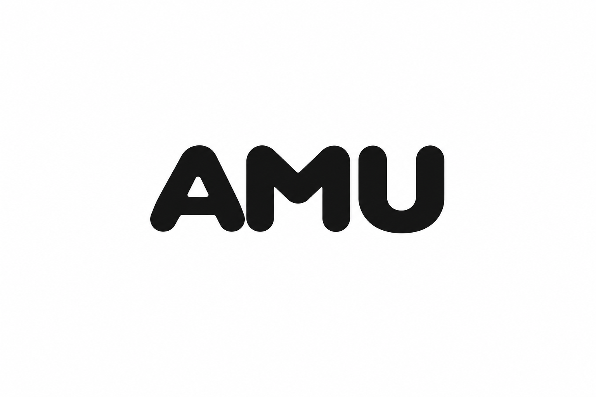

차갑고 미니멀하되
죽지 않게
Mobbin 톤 유지 · 포인트 컬러 #FF3C7D · 세부 요소 차별화
1. 디자인 원칙
유지할 것 · 바꿀 것 · 절대 안 할 것.
유지 (Mobbin 톤에서 가져갈 것)
- Near-neutral 오프화이트 배경 (
#F5F5F5) — 크림/베이지 절대 지양 - 순검정 텍스트 (
#0A0A0A) — 회색 톤 다운 지양 - Pretendard Variable 한글 최적화 폰트
- 큰 디스플레이 타이포 +
tracking-tighter rounded-3xl카드 라운드- 넉넉한 여백 · 정보 밀도 우선
- 그라데이션·글로우·과한 애니메이션 금지
바꿀 것 (Mobbin과 차별화)
- 헤더 검색바를 중앙 pill에서 다른 위치·형태로
- 로고에 미세한 마스코트 액센트 추가 (텍스트-only 지양)
- 4열 taxonomy grid를 3열로 축소 + 다른 위계
- #FF3C7D 포인트 컬러를 국소적으로 배치
- 활성 상태 표시를 밑줄에서 밑줄+짧은 pink 액센트로
절대 하지 않을 것
- 포인트 컬러를 배경·큰 면적에 사용 (아이덴티티 흐려짐)
- 그라데이션 형태의 pink → violet 등 유행 컬러 조합
- 둥근 그림자·글로우로 pink 강조 (미니멀 톤 훼손)
- 화려한 애니메이션이나 파티클 효과
- 다크모드 우선 설계 (라이트가 브랜드 기본값)
2. 컬러 시스템
모노크롬 기반 + 국소 포인트.
기본 팔레트 (Neutral · 유지)
포인트 컬러 (신규)
3. 포인트 컬러 사용처
허용 · 제한 · 금지 리스트.
✅ 허용 (핑크 사용 OK)
| 위치 | 이유 |
|---|---|
| AMU Pick 뱃지 | 브랜드 시그니처. 사이트에서 유일하게 색이 있는 뱃지 |
| 활성 업보트 버튼 | 사용자가 지금 좋아하는 프로덕트임을 명확히 신호 |
| NEW 태그 | 등록 24시간 이내 프로덕트 카드에 소량 pink 표시 |
| 활성 정렬 탭 밑줄 | 검정 밑줄 → pink 밑줄로 미묘한 활력 |
| 입력 포커스 링 | 회색 링 → pink 링. 인터랙션 순간에만 노출 |
| 알림 도트 | 아바타 우상단 알림 표시 등 매우 작은 도트 |
| 로고의 마침표 도트 | AMU 워드마크 옆 작은 원형 액센트 |
| 강조 언더라인 (본문 링크) | 기본 검정 언더라인, hover 시에만 pink로 전환 |
⚠️ 제한 (조건부 허용)
- 주요 CTA 버튼 → 기본은 검정 pill, 특수 액션(구독·회원가입 등)만 pink
- 필터 칩(activeFilter) → 배경 검정 유지, 텍스트만 pink 고려
- 차트·데이터 시각화 → pink는 하이라이트 시리즈에만
🚫 금지
- 카드 배경을 pink 계열로 (미니멀 톤 파괴)
- 페이지 배경이나 큰 섹션 배경에 pink
- 텍스트 본문을 pink로 (긴 글에 사용 시 피로)
- 아이콘 전체를 pink로 (아이콘은 기본 검정)
- pink → 다른 컬러 그라데이션
- 애니메이션으로 pink 강조 (반짝임·펄스 등)
시각 예시
→ pink가 정보성 신호로서의 힘을 잃음. 아이덴티티도 흐려짐.
→ pink는 브랜드 시그니처로만 사용. 나머지는 위계 유지.
4. Mobbin 차별화 요소
따라한 티가 나지 않도록 세부 재설계.
1. 로고
시스템 폰트 기반 텍스트 워드마크. 어느 사이트든 흔한 표기.
오너 직접 디자인한 커스텀 워드마크. 순검정 유지, 라운드가 강한 서체로 아무 마스코트의 부드러운 형태와 결이 맞음.
public/logo_amu.png 에 배치. 헤더에서는 높이 ~24px, 커버·큰 랜딩에서는 높이 ~48~68px 로 사용. 색 조작 금지 (순검정 그대로).
2. 헤더 검색바 위치·형태
지금 Mobbin처럼 헤더 중앙에 pill 검색바. 이를 두 가지 방향 중 하나로 변경:
- A안 — 헤더에서 검색 제거. 홈 히어로에 큰 검색바 앵커. 다른 페이지에서는 우상단 🔍 아이콘 버튼만 노출 → 클릭 시 모달·오버레이 검색
- B안 — 헤더에 유지하되 pill이 아닌 둥근 사각형(
rounded-2xl) + 왼쪽 앵커. 중앙 정렬 안 함. 폭 좁게 (300px)
3. Taxonomy Grid 축소
카테고리 · 가격 · 컬렉션 · 단축 — Mobbin의 Categories/Screens/UI Elements/Flows 구조와 유사
카테고리 · 컬렉션 · 단축 — 가격은 필터 chip으로 이동. 3열이 되어 시각적으로 가벼워지고 Mobbin과 확연히 구별됨
4. 컬럼 헤딩 스타일
지금 text-sm text-neutral-500. 이를 uppercase micro-label로 변경:
작은 캡션이 영문 대문자 스타일로 바뀌면 편집자적 톤이 강해지고 Mobbin의 한글 캡션과 다른 결이 됨.
5. 활성 상태 표시
Sort tab 활성 상태를 밑줄만이 아니라 pink 짧은 밑줄로:
5. 컴포넌트별 변경
현재 코드 기준으로 어디를 어떻게 바꿀지.
| 컴포넌트 | 변경 |
|---|---|
| TheHeader.vue |
· 로고를 <img src="/logo_amu.png"> 로 교체 (텍스트 → 이미지)· 중앙 검색 pill 제거 (홈 히어로로 이동) · 다른 페이지엔 우측 검색 아이콘 버튼만 |
| ProductCard.vue |
· AMU Pick 뱃지: 검정 → AMU Pick · 24시간 이내 등록 프로덕트에 NEW 태그 |
| index.vue |
· 히어로 섹션 추가 (검색바 앵커) · 4열 → 3열 taxonomy grid · Sort tab active 밑줄 pink · 컬럼 헤딩을 uppercase micro-label로 |
| ProductUpvoteButton | 활성 상태: 검정 pill → pink pill (bg-[#FF3C7D]) |
| ProductShowroomSection | 투자자 pitch 라인을 pink 텍스트 or pink 짧은 마커로 강조 |
| Input 포커스 | 포커스 링을 뉴트럴 → pink로 (Nuxt UI 테마 오버라이드) |
| main.css |
· --color-primary 계열에 pink 등록· CSS 변수 --amu-accent: #FF3C7D 추가
|
| app.config.ts | Nuxt UI의 primary: 'neutral'은 유지. Pink는 semantic 컬러로 별도 등록 (버튼 color="pink" 사용 가능하게) |
구현 우선순위
- 1순위 — 로고 이미지 반영 · AMU Pick 뱃지 pink화 · 활성 sort 밑줄 pink
- 2순위 — 헤더 검색 재배치 · 홈 히어로 검색바 · 4→3열 grid
- 3순위 — NEW 태그 · 업보트 pink · 포커스 링 pink
- 4순위 — Uppercase micro-label · showroom pink 액센트
6. 검증 체크리스트
각 변경 반영 후 스스로 확인할 것.
브랜드 정체성
- ☐ 첫 방문에서 "이건 어디서 본 사이트인데?" 느낌이 안 남
- ☐ AMU 로고가 Mobbin의 순수 텍스트 워드마크와 구분됨
- ☐ AMU Pick 뱃지가 브랜드 시그니처로 기억됨
색 사용
- ☐ 한 화면에 pink 요소가 5개 이하
- ☐ pink가 배경·큰 면적에 쓰이지 않음
- ☐ 스크린샷을 흑백으로 변환해도 정보 위계가 그대로 유지됨
Mobbin 차별화
- ☐ 헤더 구조가 Mobbin과 명백히 다름
- ☐ Taxonomy 컬럼 수·헤딩 스타일이 다름
- ☐ 사이트를 Mobbin과 나란히 놓고 봐도 "따라했다"는 인상 없음
미니멀 톤 유지
- ☐ 그라데이션·글로우·과한 애니메이션 없음
- ☐ 배경이 여전히 near-neutral 오프화이트
- ☐ 정보 밀도가 유지됨 (여백 낭비 아닌 의도적 배치)
인터랙션
- ☐ 활성 상태(현재 필터·정렬·페이지) 한눈에 보임
- ☐ 포커스 링이 키보드 사용자에게 명확히 보임
- ☐ hover 상태가 지나치게 화려하지 않음